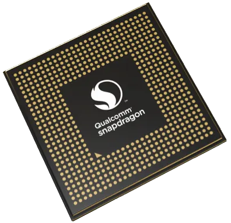

Qualcomm Snapdragon 845 (SDM845)
|  | |
| Manufacturer | Qualcomm |
|---|---|
| Name | SDM845 |
| Architecture | aarch64 |
| CPU | 4x 2.8 GHz Kryo 385 Gold, 4x 1.8 GHz Kryo 385 Silver |
| GPU | Adreno 630 |
| Year | 2018 |
| Process | 10nm |
| Mainline | yes |
| Community Page | https://gitlab.com/sdm845-mainline |
| Components | |
| CPU |
Works
|
| UART |
Works
|
| Storage |
Works
|
| USB |
Works
|
| Display |
Works
|
| GPU |
Works
|
| Pinctrl |
Works
|
| I²C |
Works
|
| Audio |
Works
|
| Video |
Works
|
| Thermal |
Works
|
| WiFi |
Works
|
| Bluetooth |
Works
|
| Modem |
Partial
|
| GPS | |
| Camera |
Works
|
| Suspend | |
{kind=link}
SDM845 (or Snapdragon 845) is a Qualcomm SoC released in 2018, with mainline support originally added for the Dragonboard 845c. It is currently one of the fastest mobile SoCs booting Mainline with full support for hardware accelerated graphics, CPU frequency scaling and wifi/bluetooth, with more features on the way.
Devices
SDM845 (Snapdragon 845)
| Device | Codename | Mainline |
|---|---|---|
| Google Pixel 3 XL | google-crosshatch | |
| LG G7 ThinQ | lg-judyln | Y |
| LG V35 ThinQ | lg-judyp | Y |
| OnePlus 6 | oneplus-enchilada | Y |
| OnePlus 6T | oneplus-fajita | Y |
| Samsung Galaxy S9 (SM-G9600/DS) | samsung-starqltechn | |
| SHIFT SHIFT6mq | shift-axolotl | Y |
| Xiaomi Mi 8/Mi 8 Pro | xiaomi-dipper, xiaomi-equuleus | Y |
| Xiaomi Pocophone F1 | xiaomi-beryllium | Y |
UFS internal storage
Warning! |
IF YOUR DEVICE IS A SONY XPERIA DO NOT NEVER EVER EVER TRY TO ENABLE UFS ON NON-VENDOR/NON-SODP KERNELS! IT WILL ERASE THE CHIP CLEAN (INCLUDING THE BOOTLOADER!) CONSIDER YOURSELF WARNED |
Join Us!
If you own an SDM845 device and want to get postmarketOS & mainline booting, head over to the #mainline:postmarketos.org postmarketOS mainline channel.
We also discuss packaging, other distros and various other non-porting stuff here in #sdm845:postmarketos.org.
Feel free to ping @caleb:postmarketos.org.
Adding yours
If you have an SDM845 based device that isn't in this list you should definitely do something about that, checkout the SDM845 Mainlining Guide for instructions on porting new devices. It is fairly straightforward to get core functionality working on most devices.
Audio
The kernel side audio stuff is mostly functional on SDM845, the largest lacking feature is headphone jack plug detection.
Modem
The modem is booted by the Q6V5 MSS Peripheral Image Loader, it is required to boot the WiFi adapter. It is exposed via the QRTR_NET layer, a custom shared memory transport layer developed by Qualcomm. Over this the standard QMI interface is exposed. ModemManager has great support for QRTR and thus it is possible to send/receive SMS, use mobile data and make calls.
Testing with QRTR
On SDM845, unlike previous SOCs, the modem is accessed through QRTR, not through a dedicated device created through rpmsgexport.
To check if the modem is available run qrtr-lookup and check for a service like User Identity Module service, or Phonebook Management Service.
Example qrtr-lookup output (for enchilada):
oneplus6:~$ qrtr-lookup
Service Version Instance Node Port
66 1 180 0 1 Service registry notification service
43 2 18 0 4 Subsystem control service
15 1 0 0 22 Test service
51 1 2 0 23 CoreSight remote tracing service
21 1 0 0 24 Modem embedded file system service
24 1 0 0 25 Thermal mitigation device service
23 1 0 0 26 Thermal sensors service
22 1 0 0 27 Time service
36 1 0 0 29 Persistent device configuration service
49 1 2 0 30 IPA control service
54 1 0 0 34 <unknown>
17 1 0 0 36 Specific absorption rate service
74 1 0 0 37 <unknown>
4098 0 0 0 38 <unknown>
34 1 0 0 40 Coexistence service
41 1 1 0 42 RF radiated performance enhancement service
55 1 2 0 44 <unknown>
228 1 0 0 45 <unknown>
9 2 0 0 50 Voice service
50 1 0 0 51 <unknown>
3 1 0 0 52 Network Access Service
12 1 0 0 53 Phonebook Management service
10 2 0 0 54 Card Application Toolkit service (v2)
1 1 0 0 55 Wireless Data Service
4 1 0 0 56 Quality Of Service service
26 1 0 0 57 Wireless data administrative service
7 1 0 0 58 Authentication service
8 1 0 0 59 AT service
29 1 0 0 60 Circuit switched videotelephony service
11 1 0 0 61 User Identity Module service
47 1 0 0 62 <unknown>
71 1 0 0 63 <unknown>
5 1 0 0 64 Wireless Messaging Service
42 1 0 0 71 Data system determination service
2 1 0 0 75 Device Management Service
16 2 0 0 76 Location service (~ PDS v2)
48 1 0 0 79 <unknown>
68 1 0 0 80 <unknown>
51 1 3 0 82 CoreSight remote tracing service
69 1 0 0 83 ATH10k WLAN firmware service
77 1 0 0 89 <unknown>
33 1 0 0 92 IMS application service
18 1 0 0 93 IMS settings service
4099 0 0 0 101 <unknown>
57 1 0 0 103 <unknown>
14 1 0 1 14 Remote file system service
64 1 1 1 16389 Service registry locator service
4096 1 0 1 16390 <unknown>
Getting SIM slot status
Run qmicli -d qrtr://<node> --uim-get-card-status to get information about cards inserted.
Example output (for enchilada):
oneplus6:~$ qmicli -d qrtr://0 --uim-get-card-status
[qrtr://0] Successfully got card status
Provisioning applications:
Primary GW: session doesn't exist
Primary 1X: session doesn't exist
Secondary GW: session doesn't exist
Secondary 1X: session doesn't exist
Slot [1]:
Card state: 'present'
UPIN state: 'not-initialized'
UPIN retries: '0'
UPUK retries: '0'
Application [1]:
Application type: 'usim (2)'
Application state: 'detected'
Application ID:
A0:00:00:00:87:10:02:FF:FF:FF:FF:89:03:02:00:00
Personalization state: 'unknown'
UPIN replaces PIN1: 'no'
PIN1 state: 'not-initialized'
PIN1 retries: '0'
PUK1 retries: '0'
PIN2 state: 'not-initialized'
PIN2 retries: '0'
PUK2 retries: '0'
Slot [2]:
Card state: 'present'
UPIN state: 'not-initialized'
UPIN retries: '0'
UPUK retries: '0'
Application [1]:
Application type: 'usim (2)'
Application state: 'detected'
Application ID:
A0:00:00:00:87:10:02:FF:44:FF:12:89:00:00:01:00
Personalization state: 'unknown'
UPIN replaces PIN1: 'no'
PIN1 state: 'not-initialized'
PIN1 retries: '0'
PUK1 retries: '0'
PIN2 state: 'not-initialized'
PIN2 retries: '0'
PUK2 retries: '0'
References
- pmaports!1356 Relevant discussion on renaming the msm-modem package as rpmsgexport is not needed on SDM845.
WiFi
Wifi is functional! Firmware for the modem and ath10k module must be loaded in order to have functional wifi.
3 packages are required for functional wifi:
rmtfs, pd-mapper and tqftpserv can be installed with
apk add rmtfs pd-mapper tqftpserv
This readme can then be followed to fixup the firmware.
Some devices need this quirk enabled for ath10k probe to succeed.
More details may also be found on the Snapdragon 835 SoC page.
Display
The Adreno 630 is relatively easy to work with, after adding a driver for your panel, obtain the firmware from your device and either compile into the kernel (in addition to enabling CONFIG_DRM_FBDEV_EMULATION for early dmesg)) or add to the right subdirectory under /lib/firmware.
I2C
I2C and the Geni hardware is functional and supported, however it is missing a driver for special GPI DMA mode used by a few devices (e.g. touchscreen on Enchilada). As of 5.11-rc1 geni is capable of DMA, however not through the GPI hardware. The issues previously discussed here no longer apply.
- WIP GPI DMA driver in mainline: https://patchwork.kernel.org/patch/11732405/
Bluetooth
Bluetooth is functional on Beryllium, however it requires that either the firmware be included in the kernel, or that bluetooth be compiled as a module.
On enchilada, bluetooth firmware is loaded but it fails to communicate with the bluetooth hardware to finish initialisation.
Haptics
Haptics is supported! See Haptics for more details.
Bootloaders
In progress u-boot port exists
See also
- OnePlus_6_(oneplus-enchilada)
- SDM845 Linux mainline kernel fork a common near-mainline kernel tree for SDM845 device development, this is the kernel shipped in postmarketOS and Mobian.
- Caleb's 2022 FOSDEM talk on mainlining the Snapdragon 845
Who's working on it
- User:kalube (@caleb:postmarketos.org on Matrix)
- User:venji10 (@venji10 on Matrix)
- User:Joel (@jo:jsfamily.in on Matrix)
- User:Dsankouski (@dsankouski on Matrix) - u-boot porting for Samsung_Galaxy_S9_(samsung-starqltechn)